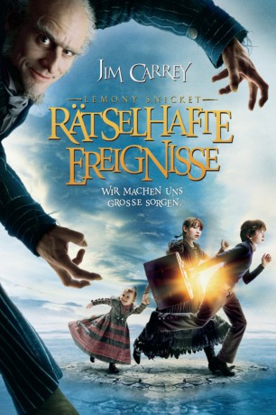

#1662 Lemony Snicket - Rätselhafte Ereignisse
Alternativ: Lemony Snicket's A Series of Unfortunate Events
Auszeichnungen: 1 Oscars gewonnen für 3 Oscars nominiert
 
 IMDB-Wertung: 6.8 / 10
IMDB-Wertung: 6.8 / 10  Metascore: 62
Metascore: 62 
Erzähler Lemony Snicket erzählt, was geschah: Als die Baudelaire-Kinder Violet, Klaus und Sunny ihre wohlhabenden Eltern bei einem Brand verlieren, übernimmt der skurrile Graf Olaf (Jim Carrey), ein entfernter und den Kindern völlig unbekannter Verwandter, ihre Vormundschaft. Er nimmt die Kinder in seine verwahrloste Villa auf, in der den Kindern von überall her ein rätselhaftes Auge entgegenstarrt. Anstatt ihnen ein neues Zuhause zu geben, dürfen sich die Boudelaires an der schmutzigen Hausarbeit beteiligen. Während dessen entpuppt sich Graf Olaf als unheimlicher Verwandlungskünstler und Anführer einer fürchterlichen Schauspieltruppe, die nur ein Ziel hat: Das stattliche Vermögen der drei Waisen! Zählen können die Kinder nur auf die nette Richterin Strauss, Tante Josephine (Meryl Streep) und: ihren Erfindungsreichtum! Doch es kommt schlimmer, als sie es erahnen können.
Jahr: 2004
Dauer: 108 Minuten
FSK: 6
Land: USA Studio: Paramount PicturesTonspuren: DD5.1 - ,
Untertitel: Deutsch, Englisch,
Auflösung: 1080p (1920x1080) Größe: 7690 MB
Genre: Abenteuer, Komödie, Familie, Fantasy
Regisseur:  Brad Silberling
Brad Silberling
Drehbuch: Robert Gordon, Daniel Handler
Soundtrack: Thomas Newman
Darsteller:
 Jim Carrey als Count Olaf
Jim Carrey als Count Olaf- Liam Aiken als Klaus
 Emily Browning als Violet
Emily Browning als Violet- Kara Hoffman als Sunny
- Shelby Hoffman als Sunny
 Jude Law als Lemony Snicket
Jude Law als Lemony Snicket Timothy Spall als Mr. Poe
Timothy Spall als Mr. Poe Catherine O'Hara als Justice Strauss
Catherine O'Hara als Justice Strauss Billy Connolly als Uncle Monty
Billy Connolly als Uncle Monty Meryl Streep als Aunt Josephine
Meryl Streep als Aunt Josephine Luis Guzmán als Bald Man
Luis Guzmán als Bald Man Jamie Harris als Hook-Handed Man
Jamie Harris als Hook-Handed Man Craig Ferguson als Person of Indeterminate Gender
Craig Ferguson als Person of Indeterminate Gender Jennifer Coolidge als White Faced Woman
Jennifer Coolidge als White Faced Woman Jane Adams als White Faced Woman
Jane Adams als White Faced Woman Cedric the Entertainer als Constable
Cedric the Entertainer als Constable Bob Clendenin als Grocery Clerk
Bob Clendenin als Grocery Clerk Lenny Clarke als Gruff Grocer
Lenny Clarke als Gruff Grocer Deborah Theaker als Mrs. Poe
Deborah Theaker als Mrs. Poe- Jaimarie Bjorge als Dream Gypsy , uncredited
 Helena Bonham Carter als Beatrice Baudelaire , uncredited
Helena Bonham Carter als Beatrice Baudelaire , uncredited Amy Brenneman als Mrs. Baudelaire , uncredited
Amy Brenneman als Mrs. Baudelaire , uncredited- Paul Bunnell als Wedding Guest , uncredited
- Julius Callahan als Davidious Augustine / Bohemian , uncredited
- Rosemary Garris als Wedding Guest , uncredited
 Gilbert Gottfried als Duck , uncredited
Gilbert Gottfried als Duck , uncredited- Rick Heinrichs als Mr. Baudelaire , uncredited
- Alan Heitz als Police Photographer , uncredited
 Dustin Hoffman als The Critic , uncredited
Dustin Hoffman als The Critic , uncredited- Michael Earl Lane als Ferry Boat Captain , uncredited
 Jane Lynch als Realtor , uncredited
Jane Lynch als Realtor , uncredited- Betsy McIntyre als Wedding Guest , uncredited
- Crystal Rivers als Bohemian #1 , uncredited
- Lidia Sabljic als Woman in Audience , uncredited
- Fred Gallo als Judge
- John Dexter als Gustav
- Wayne Flemming als Captain Sam , scenes deleted
- François Duhamel als French Radio Reporter , uncredited
- Paul G. Gray als Wedding Guest , uncredited
- Rob Hinderstein als Banker , uncredited
- Nick Meaney als Voice over , uncredited
- Christopher Metas als Wedding Audience , uncredited
Datei: X:\2004(G-M)\Lemony Snicket - Rätselhafte Ereignisse (2004, FSK6, 1920x1080).mkv seit 03.08.2015
Festplatte: HD 2003-2004-2005(A-F)
 Es gibt insgesamt 41 Filme in der Gruppe '2004(G-M)'
Es gibt insgesamt 41 Filme in der Gruppe '2004(G-M)'